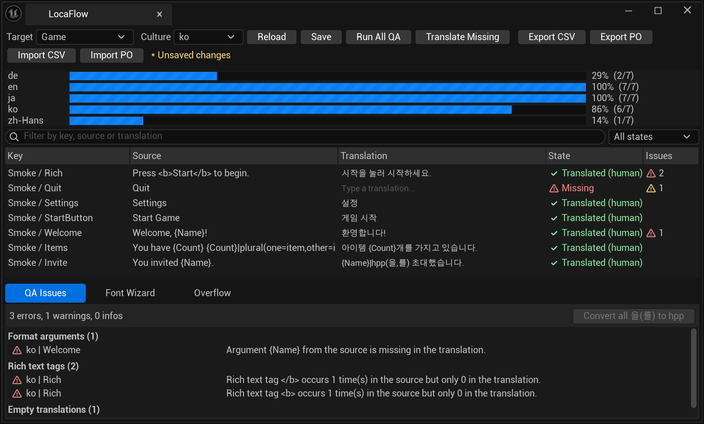
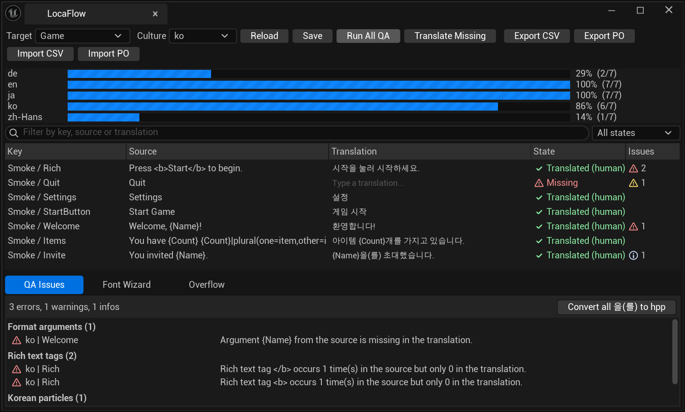
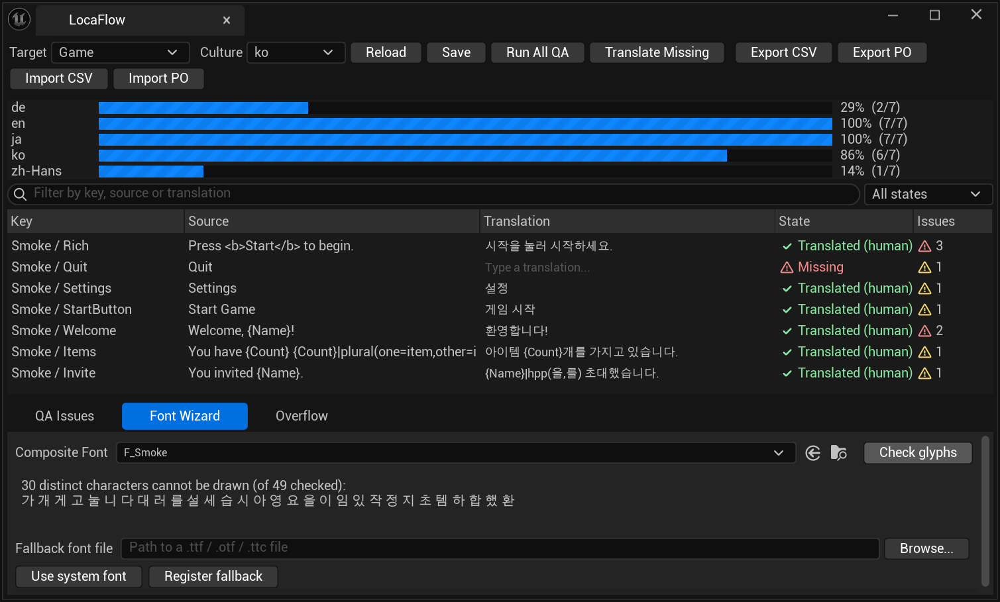

2→0건
Fab 기술 심사 Fail
신고한 플랫폼(Win64)과 모듈 설정이 달랐던 것, 저작권 표기 누락을 고쳐 다시 제출했습니다.
FAB TRC · 2026.10.15Unreal Engine Plugin · Localization QA · Fab 제출
번역 실패를 성공으로 보이게 두지 않고,
엔진 동작은 소스로 확인합니다.
Unreal Engine의 Localization Dashboard를 쓰는 개발자를 위해, 번역 문장의 오류를 찾아 고치고 DeepL·OpenAI 호환 API로 번역까지 돕는 에디터 플러그인입니다. 엔진 동작은 엔진 소스의 파일과 줄 번호로 확인했고, Fab 기술 심사 지적을 고쳐 다시 제출했습니다.

신고한 플랫폼(Win64)과 모듈 설정이 달랐던 것, 저작권 표기 누락을 고쳐 다시 제출했습니다.
FAB TRC · 2026.10.15심사 기준에 맞춰 모든 소스 파일 머리말을 같은 형식으로 통일했습니다.
SOURCE · Copyright실서비스 DeepL에 잘못된 키를 넣어도 작업이 중단되고 기존 번역이 그대로 보존되는 것을 확인했습니다.
TRANSLATE · 회귀 테스트번역 작업 끝에 대상 전체를 번역됨으로 바꾸던 것을, 실제로 바뀐 항목만 집계하게 고쳤습니다.
TRANSLATE · 출시 전 리뷰 P1Windows 압축 도구가 만든 역슬래시 경로를 슬래시로 다시 압축하고, 다른 OS 방식으로 풀어 다시 빌드했습니다.
RELEASE · ZIP수정할 때마다 5.5.4·5.8.3에서 빌드 → 자동 테스트 → 실제 흐름 테스트를 다시 돌렸습니다.
TEST · 5.5.4 · 5.8.3현지화 QA · 한국어 조사 · 폰트 · 번역
현지화 작업에서 반복되는 실수(인자 누락, 태그 불일치, 빈 번역, 원문이 바뀐 번역)를 자동으로 찾고, 한국어 조사 "을(를)"을 엔진 문법 |hpp(을,를)로 한 번에 바꾸며, 폰트가 그리지 못하는 글자와 위젯 넘침까지 언어별로 보여 주는 도구입니다. 번역 API는 사용자가 자기 키를 넣는 방식으로, 비용 추정과 작업당 상한을 두었습니다.


사람이 직접 고친 번역에 표시를 남겨야 했는데, 엔진이 번역 파일을 다시 저장하면 표시가 사라졌습니다. 엔진 소스를 확인하고 저장 위치를 바꿨습니다.
UE 5.8 저장 로직이 일부 메타데이터만 다시 써서 사라짐
자동 번역이 사람이 고친 문장을 덮어쓸 위험
<언어>/<대상>.locaflow.json에 따로 기록
UE 5.5·5.8 모두 Gather 뒤에도 표시 유지
검사 규칙(QA)과 번역(Translate)을 분리해, 번역 API가 실패해도 검사와 편집은 그대로 쓸 수 있게 했습니다. 게임 안 언어 메뉴용 기능만 Runtime 모듈에 두었습니다.
아카이브·CSV·PO, 사람 편집 별도 기록
인자·복수형·태그·빈 번역·원문 변경
태그 보호, 비용 상한, 재시도, 실패 집계
인라인 편집, 폰트 마법사, 넘침 미리보기
AI가 "고쳤다"고 해도, 수정할 때마다 두 엔진 버전에서 처음부터 다시 빌드하고 테스트했습니다.
AI 설명을 그대로 믿지 않고, 설치된 엔진 소스의 파일명과 줄 번호를 근거로 남겼습니다.
빌드 → 자동 테스트 → 실제 흐름 테스트를 두 버전에서 반복했습니다.
작업 목록을 "직접 해야 함 / Claude가 할 수 있음"으로 나누고, 금융 정보는 사람이 직접 입력했습니다.
OpenAI 성공 경로는 계정 크레딧 부족으로 확인하지 못했다고 문서에 그대로 남겼습니다.
심사 체크리스트의 코드 플러그인 항목 2개가 Fail이었습니다.
상품 페이지에는 Windows 전용으로 신고했는데, 에디터 모듈 4개의 허용 플랫폼은 Win64·Mac·Linux였고 런타임 모듈은 설정이 없었습니다. 저작권 표기에 연도도 빠져 있었습니다. 모듈 5개를 Win64로 통일하고, 소스 53개 파일의 표기를 같은 형식으로 맞췄습니다.
두 엔진 버전에서 테스트 10/10, 실제 흐름 9/9, 플러그인 빌드 경고 0·오류 0을 확인하고 패키지를 교체했습니다.
{ "Name": "LocaFlowCore", "Type": "Editor", "PlatformAllowList": ["Win64"] },
{ "Name": "LocaFlowTranslate", "Type": "Editor", "PlatformAllowList": ["Win64"] },
{ "Name": "LocaFlowQA", "Type": "Editor", "PlatformAllowList": ["Win64"] },
{ "Name": "LocaFlowEditor", "Type": "Editor", "PlatformAllowList": ["Win64"] },
{ "Name": "LocaFlowRuntime", "Type": "Runtime", "PlatformAllowList": ["Win64"] }출시 전 코드 리뷰에서, 번역 작업이 끝나면 실패하거나 취소된 항목까지 전부 "번역됨"으로 바뀌는 것을 발견했습니다. 원문이 바뀐 오래된 번역이 최신처럼 보일 수 있었습니다.
작업 대상 전체가 아니라 실제로 바뀐 항목만 집계하고, 실패한 항목이 있으면 작업을 성공으로 끝내지 않게 했습니다.
가짜 서버로 인증 실패(401)·토큰 손실 회귀 테스트를 추가했고, 실제 DeepL에 잘못된 키를 넣어 403으로 중단되고 기존 번역이 그대로 보존되는 것을 확인했습니다.
const FString Msg = Progress.Failed == 0
? FString::Printf(TEXT("Translated %d entries."), Progress.Done)
: FString::Printf(TEXT("Translated %d of %d entries; %d failed. Last error: %s"),
Progress.Done - Progress.Failed, Progress.Total, Progress.Failed, *Progress.LastError);
// 부분 결과는 반영하되, 하나라도 실패하면 작업은 성공이 아니다
Finish(Progress.Failed == 0, Msg);사람이 직접 고친 번역에 남긴 표시가, 엔진이 번역 파일을 다시 저장하면 사라졌습니다.
UE 5.8의 번역 파일 저장 로직이 메타데이터 중 Key만 읽고 다시 쓰기 때문이었습니다. 엔진 소스 줄 번호로 확인한 뒤, 표시를 엔진 파일이 아닌 별도 파일로 분리했습니다. 같은 작업에서 원문이 다른 CSV·PO 행을 건너뛰는 문제도 고쳤습니다.
실제 텍스트 수집(Gather) 후에도 표시가 유지되는 것을 두 엔진 버전에서 확인했습니다.
글자 지원 검사 결과와 실제 화면 렌더링이 달랐습니다.
모든 대체 폰트의 글자 범위를 합쳐서 판정했지만, 엔진은 언어별 우선순위로 폰트를 고릅니다. 또 UE 5.5는 하한값만 비교하는 정렬을 쓰는데 LocaFlow는 안정 정렬을 써서 같은 범위에서 다른 폰트가 선택됐습니다. 엔진과 같은 정렬을 쓰고, 선택된 폰트에 글자가 없으면 기본 → 대체 순서로 다시 찾게 했습니다.
겹치는 범위 테스트는 5.5와 5.8의 기대값을 따로 두고, 이후 빌드에서 테스트 10/10을 유지했습니다.
Windows PowerShell 5.1로 만든 배포 ZIP 안의 경로 구분자가 \였습니다.
/ 경로로 다시 압축했습니다.
일반 unzip으로 풀어 두 엔진 버전에서 다시 빌드해 성공을 확인했습니다. ZIP 해시와 공개 문서·ZIP 안 문서 일치까지 제출 전에 점검했습니다.
UE 5.5.4 패키징 게임이 종료할 때 비정상 종료 코드가 나왔고, UE 5.8.3 시작 시 테스트 오류 로그 15줄이 출력됐습니다.
두 경우 모두 LocaFlow를 끈 빈 프로젝트에서도 똑같이 재현되는 것을 확인해 엔진 쪽 현상으로 분리했습니다.
원인을 단정하지 않고 재현 조건과 함께 기록으로 남겨, 플러그인 문제와 섞이지 않게 했습니다.
미검증으로 남긴 것: OpenAI 실제 번역 성공 경로는 계정 크레딧 부족(429)으로 확인하지 못했습니다. 이때도 LocaFlow는 "0 of 5 entries; 5 failed"로 끝내고 기존 항목을 바꾸지 않았습니다. 심사 지적을 고친 패키지로 교체했고, 재심사 결과는 확인 전입니다. 소스 저장소는 비공개입니다.
Contact
실패를 성공으로 보이게 두지 않고, 엔진 동작은 소스로 확인하는 개발자 김현준입니다. 읽어 주셔서 감사합니다.